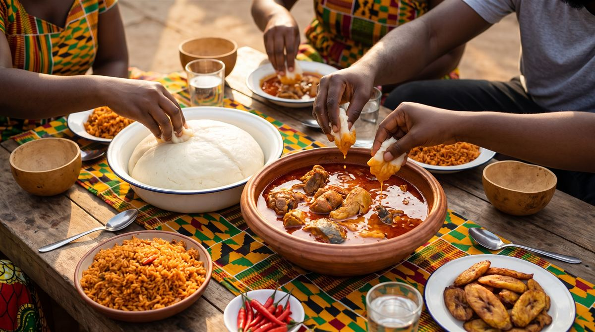
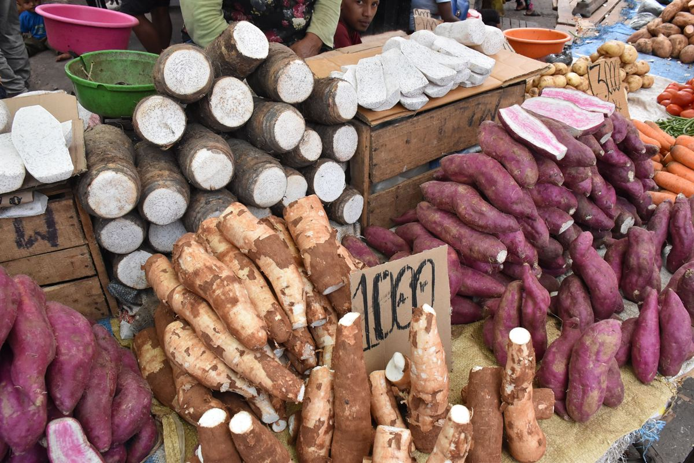
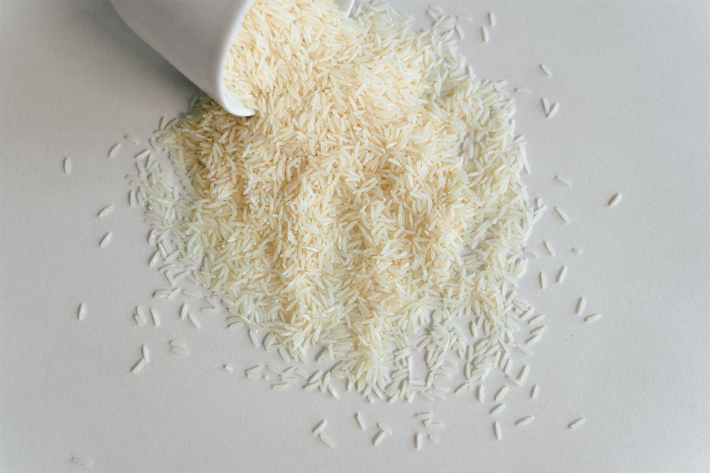
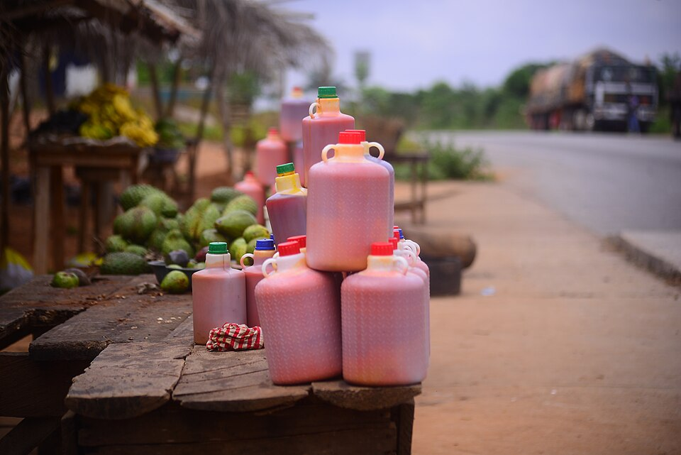
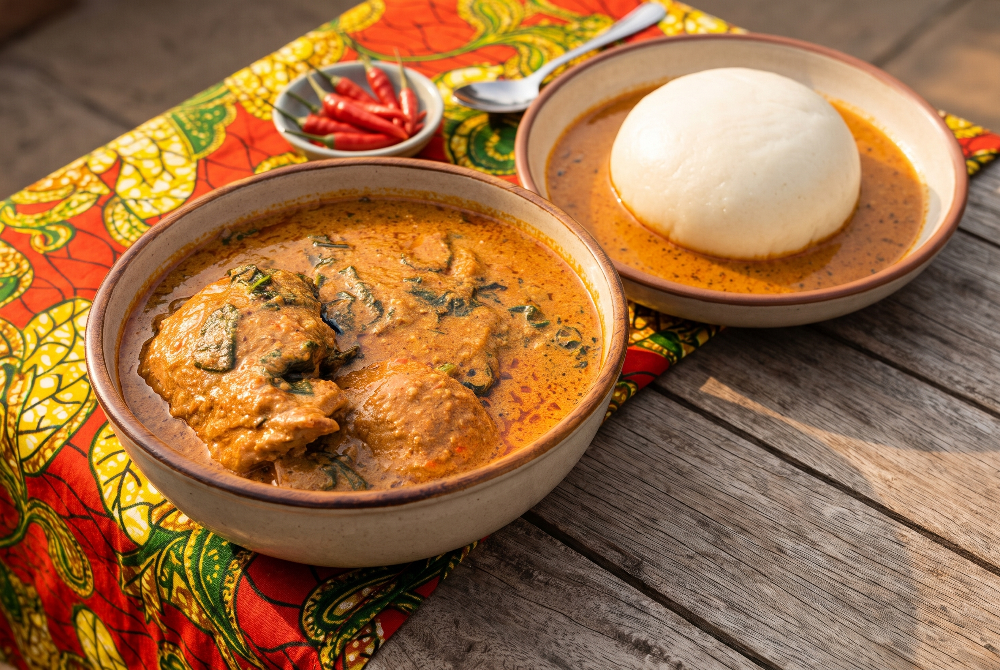

Jollof rice
Rice cooked in a tomato and pepper base until smoky at the bottom.
View recipePepper, palm oil and a pot shared by everyone. Almost every meal starts with tomato, onion and scotch bonnet frying in oil.
Countries covered: Benin, Burkina Faso, Cape Verde, Côte d'Ivoire, The Gambia, Ghana, Guinea, Guinea-Bissau, Liberia, Mali, Mauritania, Niger, Nigeria, Senegal, Sierra Leone, Togo.
Meals are shared, and many dishes are eaten with the fingers. A host will often offer water before anything else. Fufu is pinched into a small ball, pressed with the thumb and dipped into soup. Most stews start with tomato, onion and chilli fried in oil, a step cooks treat as almost sacred, and on the coast smoked and dried fish flavour the pot.


Boiled and pounded into fufu, or served beside stews.

The base for jollof and many party dishes.

The red, rich cooking oil of the coast.

Fried into akara or cooked with greens.
Tomato, onion and chilli fried in oil to start almost every stew.
Boiled cassava, yam or plantain pounded smooth with a pestle and mortar.
Spiced meat skewers coated in ground peanuts, cooked by street vendors.
Rice cooked in a tomato and pepper base until smoky at the bottom.
View recipe
A rich soup of toasted ground peanuts, eaten with rice or fufu.
View recipe